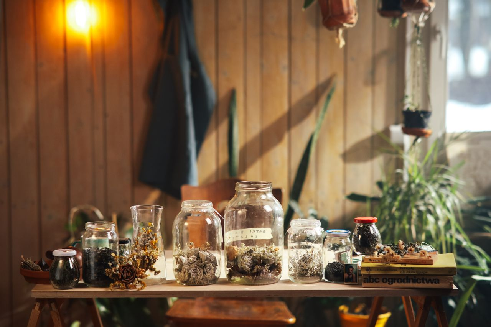
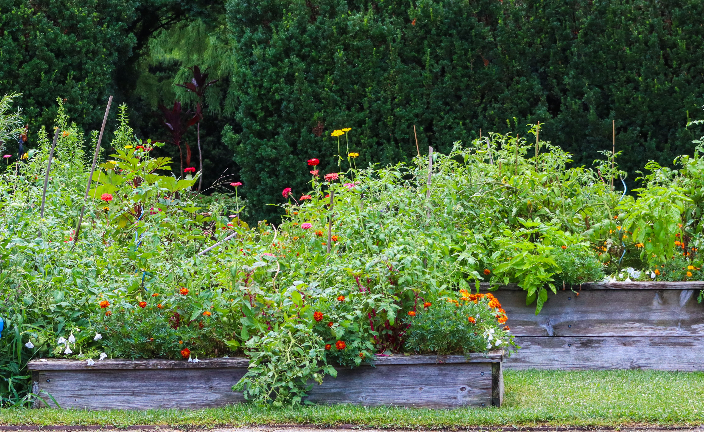
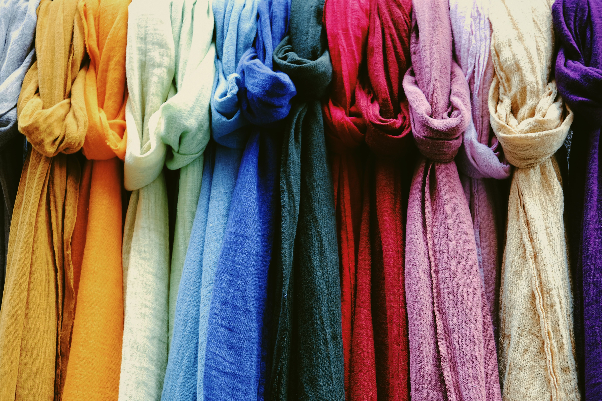
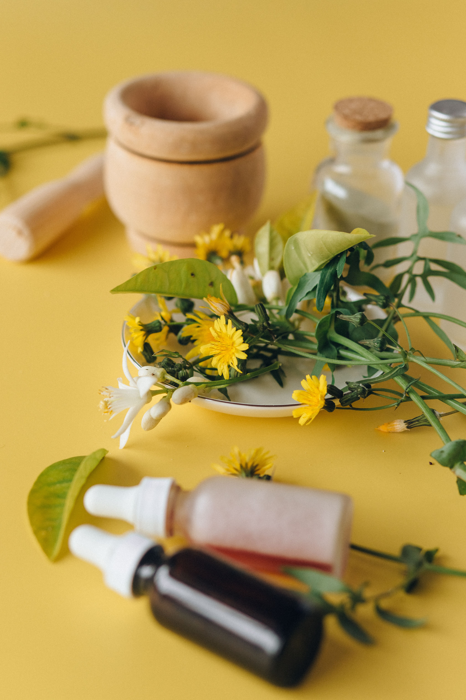
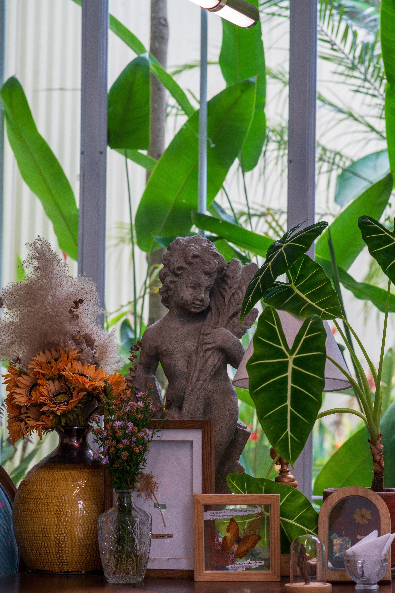
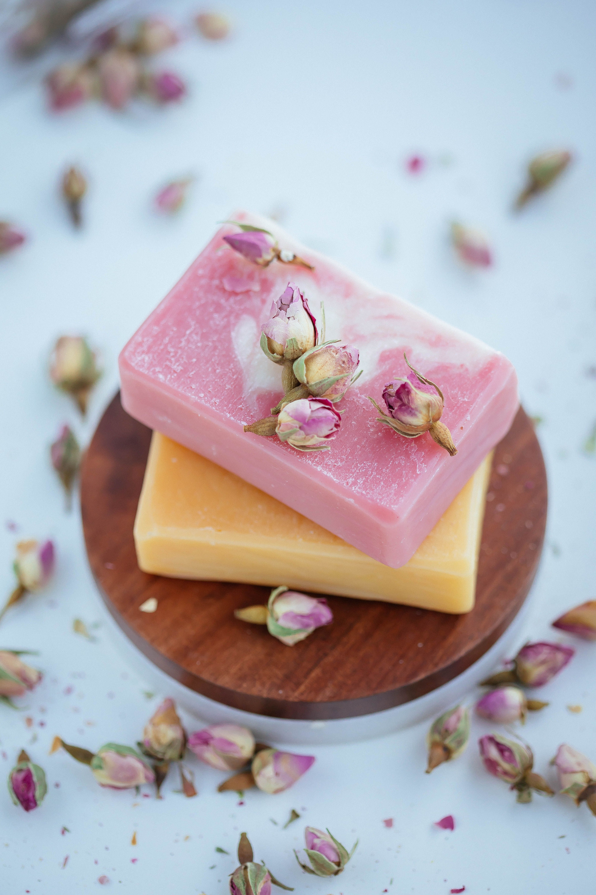

Welcome to Dandelion-Rose

Rooted in Nature, Inspired by Beauty
Discover the beauty of living closer to nature. From herbs and gardens to natural fabrics, botanical body care, and thoughtfully made home goods, Dandelion-Rose is a place to learn, create, and find inspiration.
Explore Dandelion-Rose
🌿 Herbs & Botanical Wellness

Explore traditional herbal knowledge, useful plants, herbal preparations, and nature-inspired wellness.
🌸 Garden Journal

Discover the benefits of growing vegetables, flowers, and herbs together in a beautiful, thriving garden.
Visit the Garden Journal🧵 Natural-Fiber Clothing

Learn about cotton, linen, wool, silk, and the beauty of choosing natural fabrics.
Explore Natural Living🌹 Natural Body & Beauty

Discover botanical oils, handmade soaps, salves, and simple ingredients inspired by nature.
🏡 Natural Home & Living

Explore natural home goods, handmade creations, useful everyday items, and thoughtful gifts.
🛍️ The Dandelion-Rose Shop

A growing collection of nature-inspired products and handmade treasures.
Visit Our ShopOur Story
Dandelion-Rose was inspired by a love of nature, creativity, and the beauty found in simple, everyday living.
Read Our Story